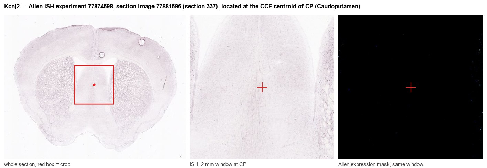
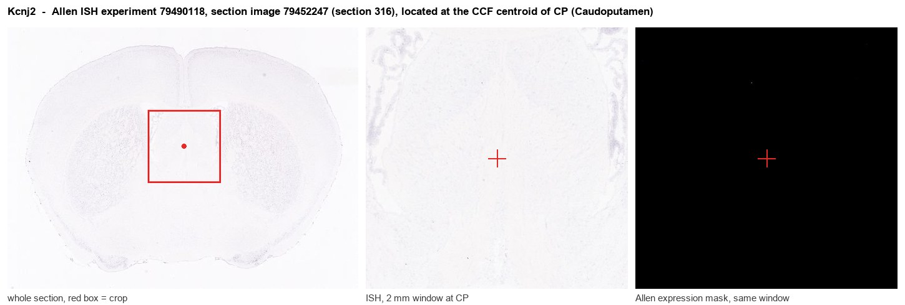
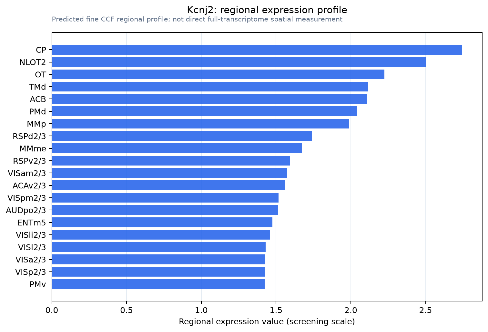

Kcnj2
Inward rectifier potassium channel 2 (Inward rectifier K(+) channel Kir2.1) (IRK-1) (Potassium channel, inwardly rectifying subfamily J member 2)
Spatial tier: REGION_BIASED · Class: ION_CHANNEL · Top region: CP (Caudoputamen) · Positive regions: 37/554
Function in CP: evidence, prediction, innovation
- Gene function
- Kcnj2 encodes Kir2.1, a strongly inwardly rectifying potassium channel. Intracellular polyamines and magnesium block outward current at depolarised potentials, so Kir2.1 conducts mainly near and below the potassium equilibrium potential, setting resting potential and input resistance. It is PIP2-dependent, heteromerises with Kir2.2/Kir2.3, and its loss causes Andersen-Tawil syndrome.
- Region function
- The caudoputamen is the dorsal striatum, whose GABAergic spiny projection neurons sit in a hyperpolarised down-state and fire only on coordinated cortical and thalamic input, implementing action selection and habit learning.
- Published in this region
- direct Direct at the Kir2 channel level. Kir2 conductance is the main determinant of the hyperpolarised down-state and low input resistance of striatal spiny neurons (Gertler 2008); Shen et al. 2007 (Nat Neurosci) showed M1 muscarinic signalling suppresses Kir2 selectively in striatopallidal neurons, raising dendritic excitability and driving spine pruning after dopamine depletion, and Cazorla et al. 2012 showed D2 overexpression downregulates Kir2.1/Kir2.3 there. Karschin et al. 1996 found abundant IRK1 mRNA in caudate putamen, though Allen ISH energy for Kcnj2 in CP is low.
- Predicted function
- Prediction: Kir2.1 in caudoputamen spiny neurons enforces the down-state and filters weak cortical input, more so in indirect-pathway cells. Knockdown or dominant-negative Kir2 should depolarise resting potential, raise dendritic excitability and bias behaviour toward hyperkinesia and impulsive action selection; overexpression should silence these neurons.
- Innovation
- ★★☆☆☆ 2/5 Kir2 currents in striatum are well characterised, but the specific role of Kcnj2 versus Kcnj4 in identified pathway neurons is unresolved.
- Tools
- Dominant-negative Kir2 and Kir2.1-overexpression AAVs for bidirectional excitability control; Kir2.1 inhibitors ML133 and VU6080824; anti-Kir2.1 antibodies; pathway targeting via Drd2-Cre or Adora2a-Cre.
- References
Direct evidence located at the region

Allen ISH experiment 77874598, section image 77881596 (section 337): the section that contains the CCF centroid of Caudoputamen according to the Allen image-to-atlas alignment (reference_to_image), with a 2 mm window around that point. Left: whole section, red box = window. Middle: ISH signal. Right: Allen's expression-mask view of the same window. open this image in the Allen viewer

Allen ISH experiment 79490118, section image 79452247 (section 316): the section that contains the CCF centroid of Caudoputamen according to the Allen image-to-atlas alignment (reference_to_image), with a 2 mm window around that point. Left: whole section, red box = window. Middle: ISH signal. Right: Allen's expression-mask view of the same window. open this image in the Allen viewer
Direct spatial evidence

Regional expression figure

Predicted WMB × fine-CCF profile; not direct full-transcriptome spatial measurement.
Spatial profile
Evidence and specificity
- Evidence status
- PREDICTED_FINE
- Direct sources
- None; predicted localization only
- Exclusive threshold
- 12 positive regions out of 554
- Spatial specificity
- 0.307
- Top-region fraction
- 0.048
- Filter status
- PASS
Interpretation limits
- Cell-type-to-region projection is imputed expression, not direct spatial measurement.
- Adult reference atlases do not establish stability across age, sex, strain, state, or disease.
- Transcript abundance does not guarantee protein abundance or genetic-tool performance.